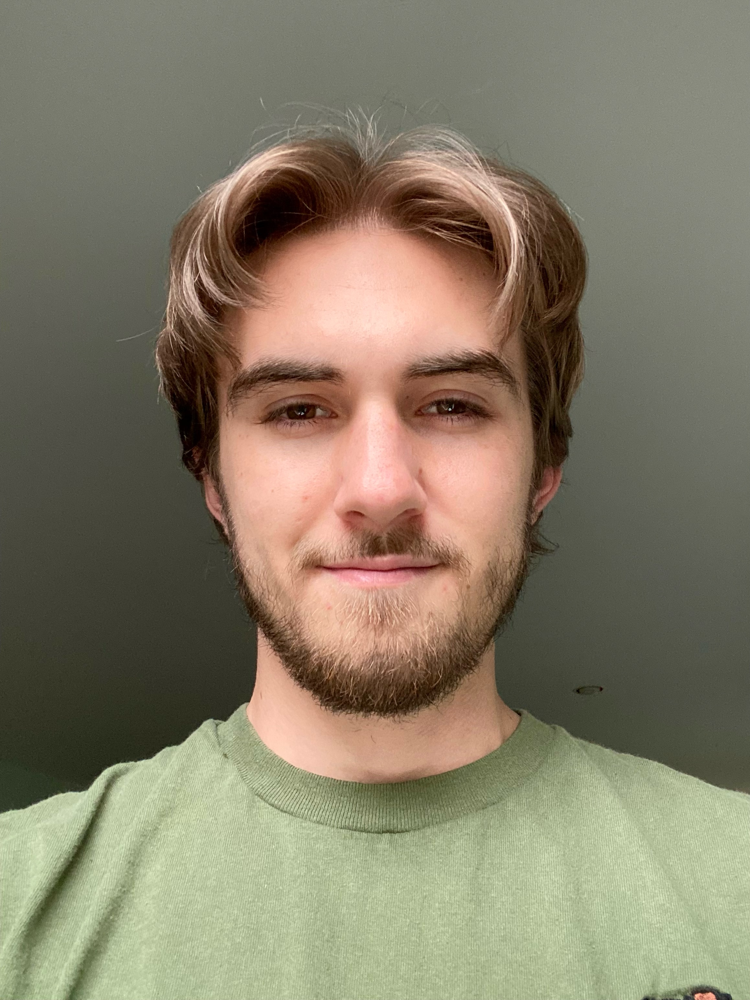
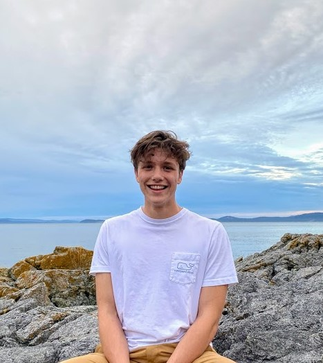
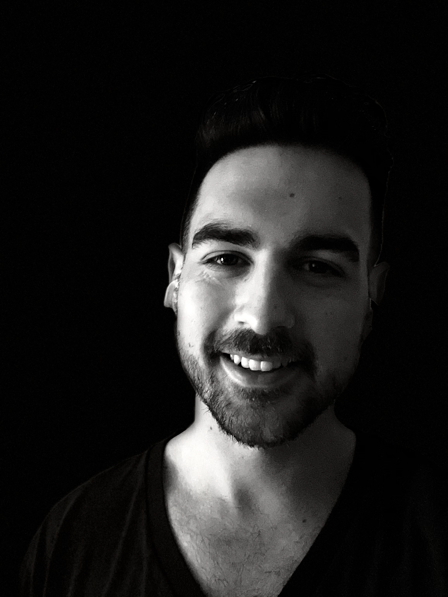

New members of BC government teams need a platform for curated resources that are easy to locate, comment on, and discuss. Currently there are a number of different tools that fill parts of the identified need which leads to more duplication and over time a lack of use and orphaned information. The goal of the CITZ Co-op/Capstone 2022 Hybrid-Workplace project team is to create a modern web application as a tool for communities to collaborate.

In highschool Braden began his journey in computer science by playing and modifying Minecraft. A programming class in 11th grade reinforced his desire to continue down this path. His creativity and efficiency with regard to solving problems has served him well in the ICS program and he looks forward to bringing what he has learned into a career in software development.

Zach entered the ICS program without any coding experience, and has grown to love it during his time at Camosun. At the moment, he is very interested in Node and web applications. Over the last year, his friend Thomas and he built a music review website viewable at spotlightapp.ca.

After years of working labour jobs, controlled substance retail jobs, sales jobs, etc. Brandon started an e-commerce company with his spouse and, after realising that he enjoyed problem solving in that setting, he chose to pursue an education in software development and looks forward to applying the skills he learned to solve more complex business problems.
Team SEA is incredibly thankful for the opportunity and support provided by their project sponsor Robert Kobenter at the government of BC’s CITZ IMB division as well as Adam Kroon and the rest of the team working on the HybridWorkplace project.
Check out team SEA's website here.